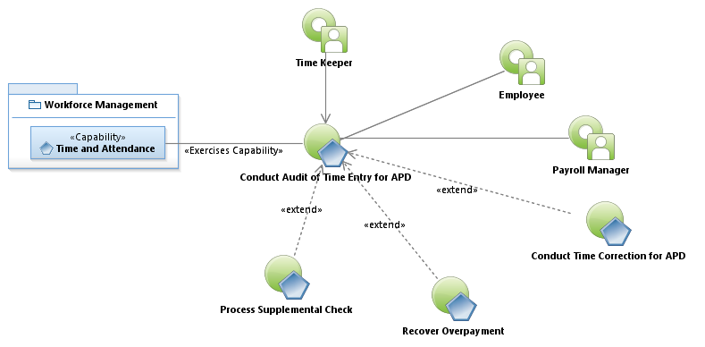

Activity Model: Conduct Audit of Time Entry for APD

Use Case Model: Conduct Audit of Time Entry for APD
Architect: Aaron Brown, IT Enterprise Architect, Senior
Date Last Modified: 4/09/2013
User Review: Gregg Olson, Leticia Paredes
Date: 04/09/2013
When Payroll closes, the Timekeeper and Payroll Manager evaluate timesheet entries in Banner and engage employees to resolve perceived anomalies.
Follow link to Role Definitions

Use Case Model: Conduct Audit of Time Entry for APD
Activity Model: Conduct Audit of Time Entry for APD